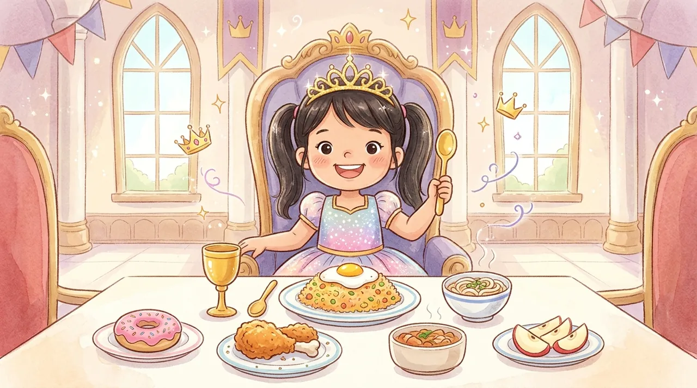

👑
Level 2 ✨
Istana Mulut
Putri Iris
Estafet Lidah Cinderella • Ketukan Kunyah Cepat • Sensor Bubur Bintang
Istana Mulut Putri Iris paling bagus dilihat menyamping.
Kalau tidak berputar, matikan kunci rotasi layar.

Estafet Lidah Cinderella • Ketukan Kunyah Cepat • Sensor Bubur Bintang